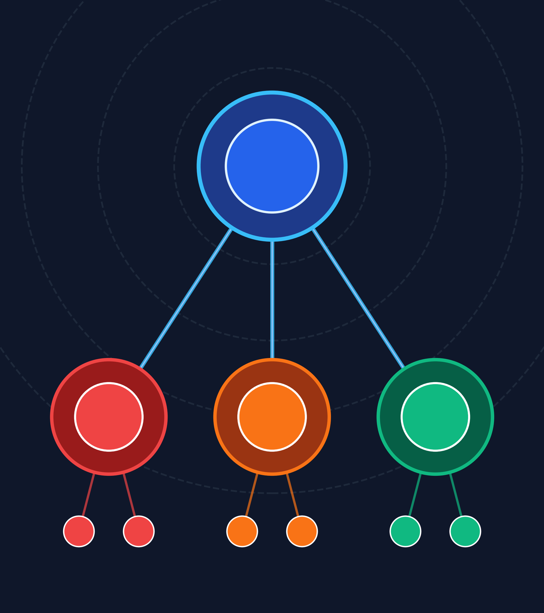
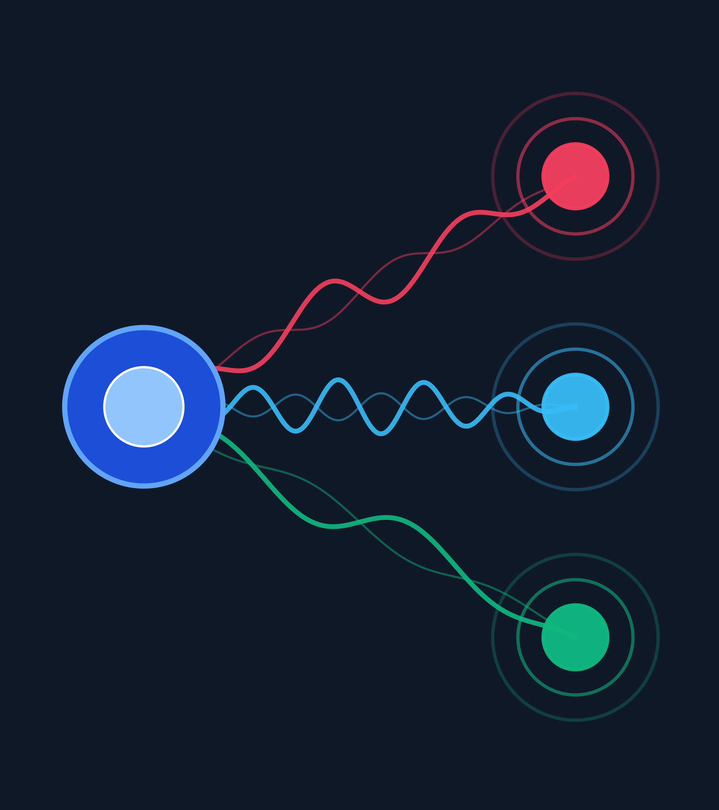

Parte 1 · Herencia
Relaciones «es-un»
De la clase base a las clases derivadas: estado común y especialización.
Integrante 1

Reutilización jerárquica, métodos virtuales y despacho dinámico en programación orientada a objetos.
De la clase base a las clases derivadas: estado común y especialización.
Tabla vtable y enlace dinámico: la llamada se resuelve en ejecución.
Dos formas distintas de redefinir comportamiento, con reglas claras.
El código de la jerarquía y la ejecución en vivo con tres especies.
La clase derivada hereda atributos y métodos de la superclase, sin volver a escribirlos.
Toda la interfaz de la base está disponible en la derivada: nombre, edad y comportamiento común.
Lo común sube a la base; lo específico de cada especie vive en su propia clase y no toca a las demás.
Centraliza el estado común —nombre y edad— con acceso protected: visible para las derivadas, oculto hacia afuera.
Usan : public Animal, llaman al constructor base y añaden rasgos propios de cada especie.
Una nueva especie es una clase nueva sobre la misma base: nada común se vuelve a escribir.

Un puntero Animal* puede apuntar a un Perro, un Gato o una Vaca.
hacerSonido() responde distinto según la especie real del objeto.
El código opera sobre Animal& sin conocer la subclase concreta.
La versión correcta del método se pospone al tiempo de ejecución.
Es la tabla de funciones del objeto que está vivo en memoria: apunta a la implementación real.
virtual void hacerSonido() const;
Invoca el destructor derivado, no solo el de la base.
Se liberan los recursos de la parte derivada y luego los de la base.
Crítico cuando se guardan punteros base a objetos derivados.
virtual en la base y override en la derivada.virtual ni override.hacerSonido() en Animal, Perro, Gato y Vaca.alimentar(comida) vs. alimentar(comida, gramos).Perro, Gato y Vaca usan nombre sin exponerlo al exterior.
Declarar virtual en la base habilita la resolución en ejecución.
El compilador comprueba que la firma de la derivada sea exacta.
La base declara la intención; la derivada verifica la firma en compilación.
El polimorfismo elimina el if/else por tipo y reduce el código duplicado.
Videojuegos (actualizar()), medios de pago y drivers de hardware lo usan a diario.
¡Gracias por su atención! Pasamos a la ejecución en vivo y a las preguntas.